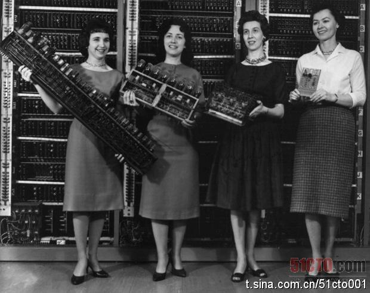
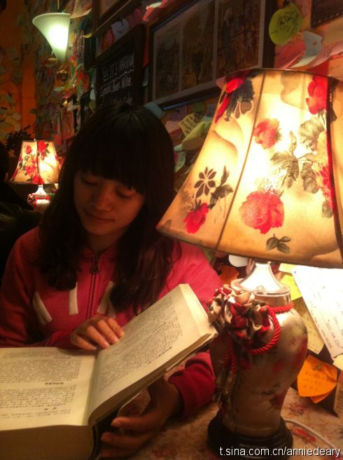

在北京，听说北京的真茅台酒的可能性最大，出产地反倒没有，因为这酒基本上就是上贡用的。在贵州出差的时候，当地人很自豪地说，茅台酒基本上90%都在贵州省内消化了，外地的都是假的。现在听海外出差的人说，还是国外买的茅台酒最真，还便宜。所谓的国酒，竟然真假说法这么多，很说明中国商品现状。

Ada李力
2011-03-07
Ada李力
2011-03-07
看到了Radia Perlman， 就是之前自己也想写中文介绍的Sun Fellow. 还有，我的英文名字来源，就是向Ada Lovelace致敬。研究生期间，学过Ada语言，因此也知道了这位世界上第一位程序员。
@51CTO官方微博:
【#妇女节~三八#】“细数IT技术史上最重要的十五位女性”，谈到IT技术的大牛，必然是男性居多，但我们别忘了人类还有一半是女性。其实在IT技术领域一直有女性的身影存在，比如第一位程序员是女性。今天我们要细数IT技术史上最重要的十五位女性。 网页链接
网页链接
- 
Ada李力
2011-03-07
如果是个新事物或者新业务，而做事情还要处处遵循原有的规则和规矩，那这个新东西是没办法做的。人要是自己就被所谓的规矩框死了，也就很难有什么突破。
Ada李力
2011-03-07
经济适用男 vs. 简单方便女。现在的标签真多。
@AAnnieeeeee:
Cafe De Marron. 音乐与灯光都刚刚好。Menu背面有个与经济适用男Match的新名词--简单方便女。解释如下：不做作，清爽简单，洗完脸一扎头发就能出门，不拜金，看淡金钱，能自己养活自己，不败家，奉行物美价廉的购物观，会持家过日子，不复杂，感情经历简单，不爱折腾。好玩，就是翻译得惨不忍睹
- 